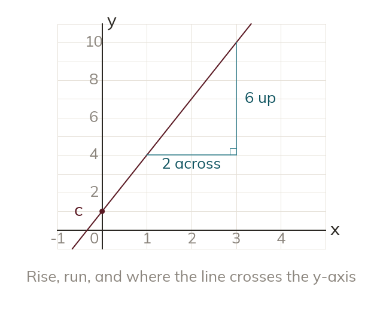

What the two numbers measure
The gradient is the vertical change divided by the horizontal change. The intercept is the value of when x is
A straight line is fixed by how steeply it rises and by where it sits. The gradient, m, measures the steepness as a comparison: the vertical change divided by the horizontal change between any two points on the line. It is a ratio, not a count of squares, and because the line is straight the same ratio comes out wherever it is measured. The y-intercept, c, fixes the line's position - it is the value of at the moment is so it is where the line meets the vertical axis, and no other crossing point tells you c.